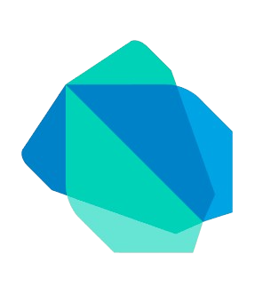
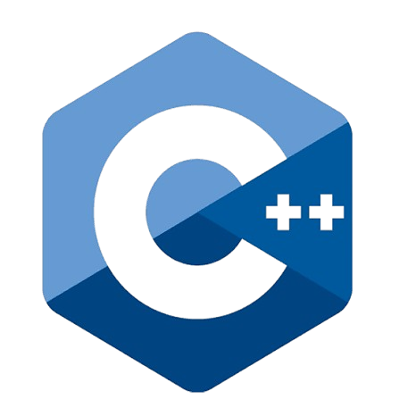
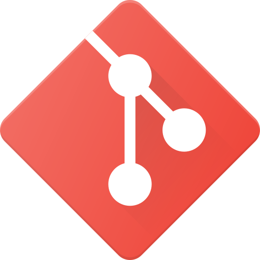
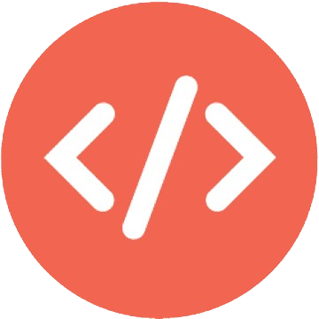
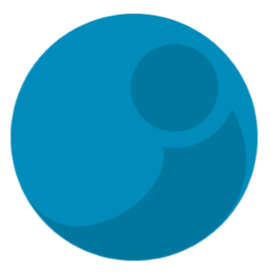
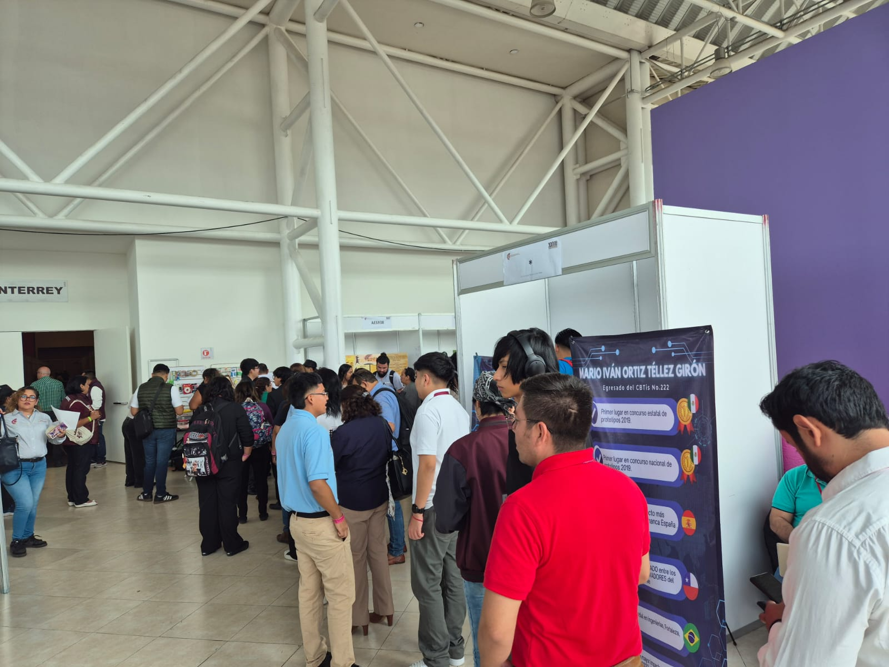
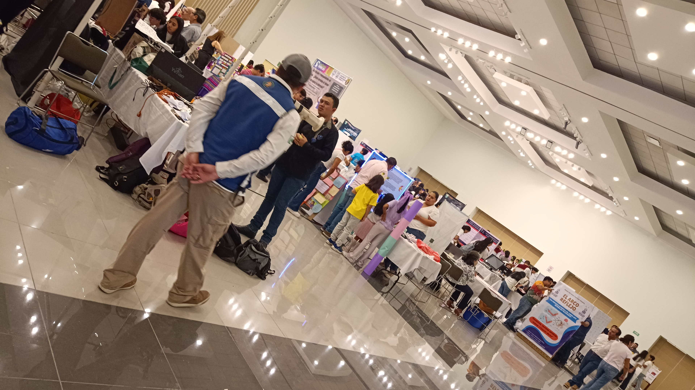

Test vocacional
2025Plataforma de apoyo estudiantil para alumnos de prepa y ofrecer su área de más interés, se hizo una versión mobile y Web conectadas a una API en PHP con MySQL.
Soy Ingeniero en Tecnolgías de la información. Me apasiona el desarrollo de APIs usando el
principio Rest ful, aplicando arquitecturas de software, y centrandome en la planificación de proyectos.
Tengo experiencia desarrollando aplicaciones web, APIs,
Apps moviles y en bases de datos relacionales.
Soy estudiante de Tecnologías de la Información y desarrollador. Lo que más me interesa del oficio
no es el lenguaje de turno, sino la estructura: dónde vive cada regla de negocio, qué le toca hacer
a cada capa y cómo evitar que un proyecto chico se vuelva imposible de tocar a los seis meses.
En el servidor trabajo con Java, Python y PHP, casi siempre exponiendo APIs REST sobre MySQL o
PostgreSQL. Del lado del cliente parto de HTML, CSS y JavaScript, y cuando la interfaz lo pide, la
llevo a React. Para móvil uso Flutter, y en el entorno académico también desarrollo nativo en
Kotlin.
Me gusta que un proyecto se explique solo al abrir el repositorio: carpetas que dicen de qué trata
el sistema, controladores delgados y las consultas donde deben estar.
Flutter

Dart

C++

CodeIgniter

C#
Django

Figma
Flutter

Git

HTML
Java

Javalin

JavaScript
MySQL

PHP

PostgreSQL

Python
React
Plataforma de apoyo estudiantil para alumnos de prepa y ofrecer su área de más interés, se hizo una versión mobile y Web conectadas a una API en PHP con MySQL.
Plataforma de apoyo emocional con herramientas de IA y VR para alumnos de prepa y monitoreo estudiantil por parte de psicologos con test de seguimiento e implementación de gráficos personales y grupales basados en los datos de los estudiantes.
Desarrollamos una pagina web interactiva con un sistema de preguntas y respuestas que ayudaba a los estudiantes a mejorar su rendimiento escolar. Enfocado a regularizar aprendizaje a nivel secundaria con el uso de métricas y herramientas que impulsaran a los estudiantes a aprender.

Participación con el proyecto PRISMA en la fase nacional en Pachuca del consurso en 2025 quedando dentro de los mejores 30 proyectos de la categoría de material didactico.

Participación en la etapa estatal dentro de la categoría apoyo social consiguiendo el primer lugar estatal y obteniendo el pase nacional.